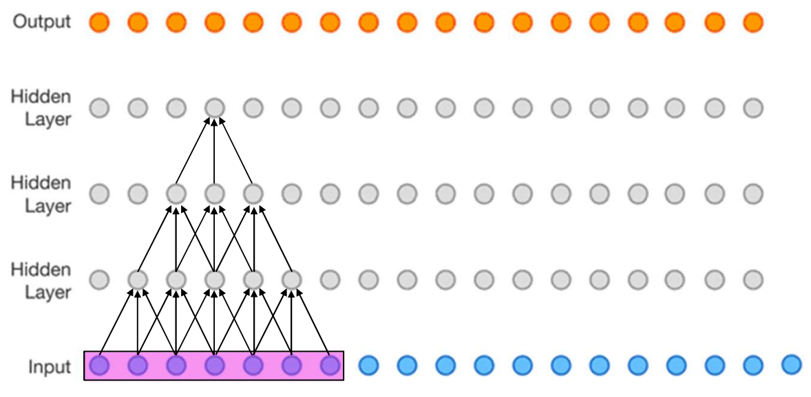
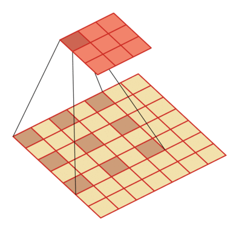
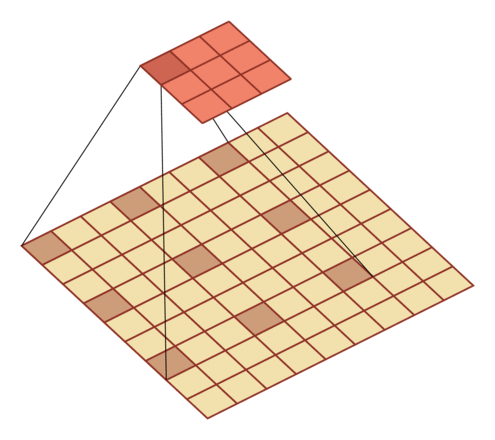

何为空洞卷积?
卷积再回顾
你可能经常看到，两个3x3的卷积核或者单独一个5x5的卷积核的感受野大小是相同的。
那么问题来了：
- 为何两者的感受野大小会相同呢？
- 既然相同，那为何大多数时候都选择两个
3x3的卷积核呢？
对于第一个问题，可以用特征图尺寸计算公式来验证：
假设输入特征图尺寸为10x10, ，执行普通的卷积，无padding，stride=1，
对于两个3x3卷积：第一次卷积输出的特征图尺寸为$10-3+1=8$，第二次卷积输出的特征图尺寸为$8-3+1=6$
对于一个5x5卷积：输出特征图尺寸为$10-5+1=6$
对于第二个问题，答案就是显著降低了参数量。
具体地，对于卷积层而言，需要学习的参数就是卷积核对应的参数。不考虑偏置项，假设输入特征图的通道数为$C$，输出通道数为$C’$，对于两个尺寸为3x3的卷积核而言，所具有的参数量为$33CC’+33CC’=18CC’$，二对于一个尺寸为5x5的卷积核而言，所具有的参数量为$5*5CC’=25CC’$。
由此可见，前者拥有更小的参数量。
计算感受野
所谓感受野，就是输出特征图中的某一个像素点能够看到输入特征图区域的大小。通常，我们会将多个卷积层堆叠在一起，因此感受野的概念是某一层相对于另一层来讲的。关于这一点，看完下面的栗子一个就清楚了。
感受野计算公式如下（自顶向下的计算方法）：
$$F(i,j-1)=(F(i,j)-1)*stride+kernelSize$$
F(i,j)表示第i层关于第j层的感受野。
可以通过下面的栗子体会下，其中卷积核尺寸是3，stride是1：

第3个隐藏层关于自身的感受野F(3,3)=1
第3个隐藏层关于第2个隐藏层的感受野是F(3,2)=（1-1）*1+3=3
第3个隐藏层关于第1个隐藏层的感受野是F(3,1)=（3-1）*1+3=5
第3个隐藏层关于输入层的感受野是F(3,0)=（5-1）*1+3=7
第2个隐藏层关于自身的感受野F(2,2)=1
第2个隐藏层关于第1个隐藏层的感受野是F(2,1)=（1-1）*1+3=3
第2个隐藏层关于输入层的感受野是F(2,0)=（3-1）*1+3=5
第1个隐藏层关于自身的感受野F(1,1)=1
第1个隐藏层关于输入层的感受野是F(1,0)=（1-1）*1+3=3
膨胀卷积
为了在不增加参数量的前提下扩大感受野，膨胀卷积出现了。
和普通卷积相比，膨胀卷积就是在卷积核中间插入了一些”空洞”，这些空洞用某个固定值，比如0来表示。因此，膨胀卷积也称为空洞卷积。
这样一来，卷积核携带的参数量并没有变化(因为空洞用固定值进行了填充，这些空洞不需要学习)，但是卷积核的尺寸却因为空洞的存在而变大了，根据上一部分的感受野计算公式可以知道，感受野也随之变大了。
膨胀率为D时，在尺寸为K的卷积核每两个元素之间插入D-1个空洞，于是卷积核的尺寸实际上变成了K+(K-1)*(D-1).
当D为1时，就是普通卷积。
D=2:

D=3:

注意，当使用膨胀卷积时，感受野计算公式也发生了变化：
$$F(I,J-1)=(F(I,J)-1)stride+dilation(kernelSize-1)+1$$
参考：